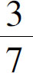
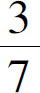
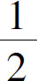
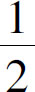
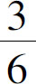
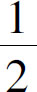
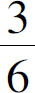
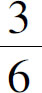
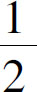
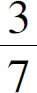

．其中的含义也就是把1平均分成7份以后，取其中的3份．于是我们就知道，分数并非是一种数字，它只不过是一个简化了的除式而已．
．其中的含义也就是把1平均分成7份以后，取其中的3份．于是我们就知道，分数并非是一种数字，它只不过是一个简化了的除式而已．
是一个数字吗？你一定会说：它当然是数字了，这不就是标准的分数吗？但我要告诉你：它不是一个数字，而只是一个除法算式，只不过我们把除号上下的两个点去掉了，然后把除法上的除数与被除数堆放在一起了，它只是3÷7的简写而已，这么说也有一定道理吧．那么，3.5是数字吗？也不是，因为3.5不过是3＋0.5，把0.5放在整数3的后面而已．那么0.5是数字吗？当然也不是了，不过是5÷10这个算式的省略写法而已．这么说来，23也不是数字，因为23只不过是20＋3，把加号去掉了，把3写在了20后边那个0的位置上而已．
按照这个道理来看，似乎只有0至9这10个数字是数字了，其他都不是数字．你又说错了，实际上只有0和1是数字，其他数字只是一个代号而已，1＋1＝2说明了什么？它说明世界上根本不存在2这个数字，只不过是为了书写方便，把1＋1这三个字符写成了2的形状而已．那么5当然就是1＋1＋1＋1＋1的缩写了．如果说1也是0＋1的缩写，这个逻辑是对的，我可以只通过1和加号组合出2以及后面的数字来，却不能通过0加上任何符号组合出1来．从0到1，是从无到有的过程，这个过程是不能忽略的．正是由于数字的本质都是0和1的组合，所以我们才能够在计算机和手机的屏幕上看到一个精彩纷呈的世界．
1＋1＝2，2＋1＝3，从1开始，逐次加1，我们可以得到所有的自然数；因为一个个地数下去太麻烦，所以我们发明了加法，这样就可以不用挨个数一遍，就知道3＋5的结果等于8．同时，当我们发现自己在反复增加同一个数字的时候发现了乘法，因为乘法只是加法的一种简便算法，所以通过乘法得到的所有数字，通过加法也同样可以得到．因此通过乘法，我们并不能得出新的数字类型来．如果我们把乘法反过来就会得到除法．有了除法我们就发现，虽然任何两个数相乘都可以得到一个自然数，但任何两个数相除却不一定能够得到自然数．比如，3×2＝6，3×3＝9，6和9除以3当然能够得到自然数，但如果6和9中间的某个数除以3，就会得到一个比2大比3小的数．但是在自然数中2后面一个数就是3，3前面一个数是2，两者之间根本就没有其他数字了．因此，要表达无法被整除的数字，就需要用到一种新的数字类型：分数．
和自然数一样，分数的个数也有无数多个，但是由于分数和自然数之间有着密切的关系，所以我们却不能再创造一种全新的符号来表示分数，而只能通过简化算式的方式来表示它，比如把3÷7的结果表示为
．其中的含义也就是把1平均分成7份以后，取其中的3份．于是我们就知道，分数并非是一种数字，它只不过是一个简化了的除式而已．
如果分数只是一个简写的除式，那它有什么意义呢？是不是仅仅在书写的时候少写两个点呢？当然不是，分数一旦作为一种新的数系出现，它就会有自己的加减乘除运算规律，这个我们已经在小学阶段学过了，这里就不再赘述．而且我们还知道，分数是可以化简的，虽然我们把3张饼分给7个人，只能得到

这样的数字，但是如果我们把3张饼分给6个人，却可以得到
这样的数字，虽然
在数量上等于
，但
和
的含义却是不同的．比如说我们在分饼的时候，
表示的是6个人围着3张饼一起分，却不知道该怎么分；而
则是把6个人先平均分成3组，把3张饼先平均分到3个小组中，然后每个小组两个人再各自分1张饼．因为除法是乘法的逆运算，所以我们得到了一种全新的数系，那么减法是加法的逆运算，是不是也可以得到一种全新的数系呢？把3张饼分给7个人不够分，就会出现 ，那么，如果我们要把3张饼分给7个人，还必须要求每人分得1张，会得到什么数字呢？那么算式就不再是
，那么，如果我们要把3张饼分给7个人，还必须要求每人分得1张，会得到什么数字呢？那么算式就不再是 了，而是3－7．由于3－3＝0，所以3－7肯定会得到一个小于0的数字，它比0还要小4，也就是说还要差4张饼才够每人1张．在自然数的数系中，小于0的数字同样是不存在的．那么怎么办？参照分数的处理办法，如果我们把3除以7写作
了，而是3－7．由于3－3＝0，所以3－7肯定会得到一个小于0的数字，它比0还要小4，也就是说还要差4张饼才够每人1张．在自然数的数系中，小于0的数字同样是不存在的．那么怎么办？参照分数的处理办法，如果我们把3除以7写作

，那么3－7不就可以直接写成3－7吗？不过我们还必须像分数的化简一样，把3－7这个数字也化简一下，得到0－4，再把0隐藏掉，于是就得到了－4这样一个简化的算式，进而我们可以得到负数这种新的数系．同理，如果我们把一个数字乘以自己叫作平方，那么平方的逆运算就是寻找哪一个数字平方后才能得到已知的数字，这个运算叫作开方．任何一个整数平方以后都可以得到一个整数，任何一个分数平方后都可以得到一个分数．但是，反过来，并不是所有的整数和分数都可以顺利地开方，那些通过开方无法顺利得到的数字，叫作无理数．
总结一下，乘法、乘方都是加法的变形、加法的简便算法，因此乘法和乘方不会带来新的数字类型，但是他们的逆运算——除法、开方和减法就不同了．当除法除不尽的时候，我们发明了一种数字叫作分数；当小数减大数不够减的时候，我们得到了负数；当开方开不出的时候，我们又发现了一种数字叫作无理数．分数、无理数、负数，这三类数字都是从自然数演化而来的，统称为实数，实数就是初中数学涉及的所有数字．在小学阶段，我们学习了分数就要立刻学习分数的加减乘除法则；同样，在初中阶段学习了负数和无理数后，也要学习这些数字的加减乘除、乘方开方的运算．
我为什么要强调这些数字都是一个个没有算完的算式呢？因为我要让你回归到数学的本质，以一个宏观的视角看待数学．别忘了，我们学习数学的目的，是为了更好地认识世界和改造世界．我们必须认识到：整个世界的一切都在运动变化之中，那些看起来静止不变的数字，其实描述的都是千变万化的运算过程．那么，为什么我要强调运算过程呢？因为我们初中阶段学习的是代数，接触更多的并不是数字，而是有很多字母组成的算式．如果我们没有这样的认识，过早地沉入复杂和烦琐的计算之中，很快就会在浩如烟海的数学中迷失自己的方向．